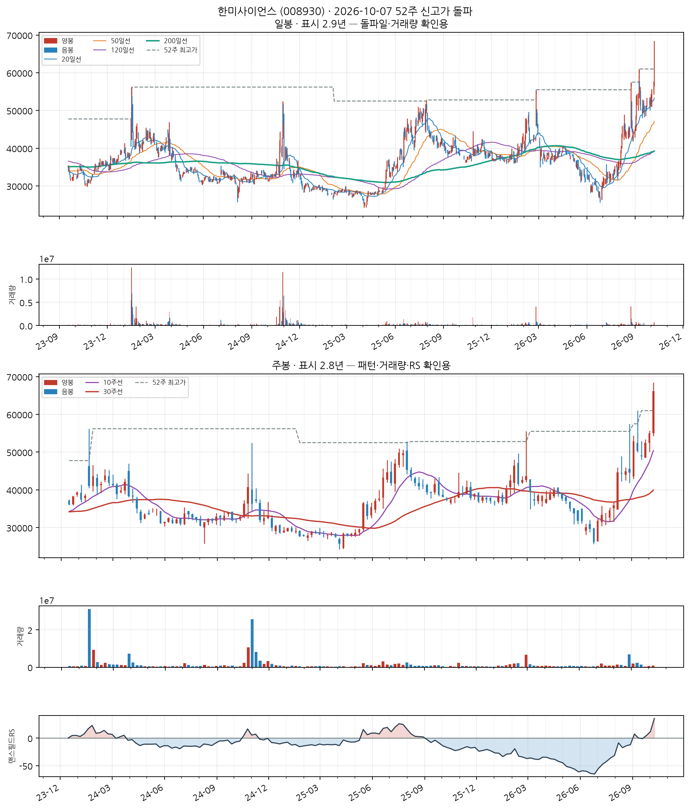
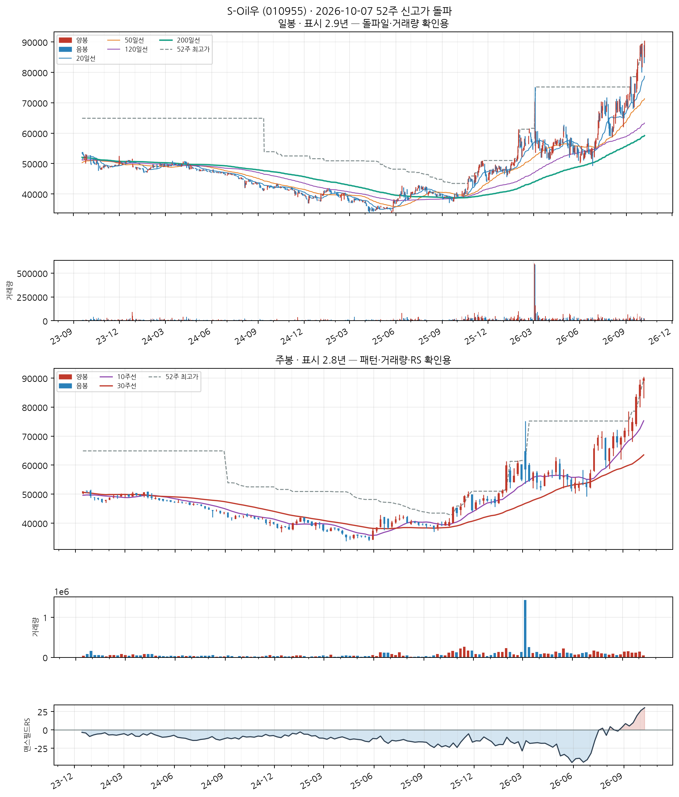
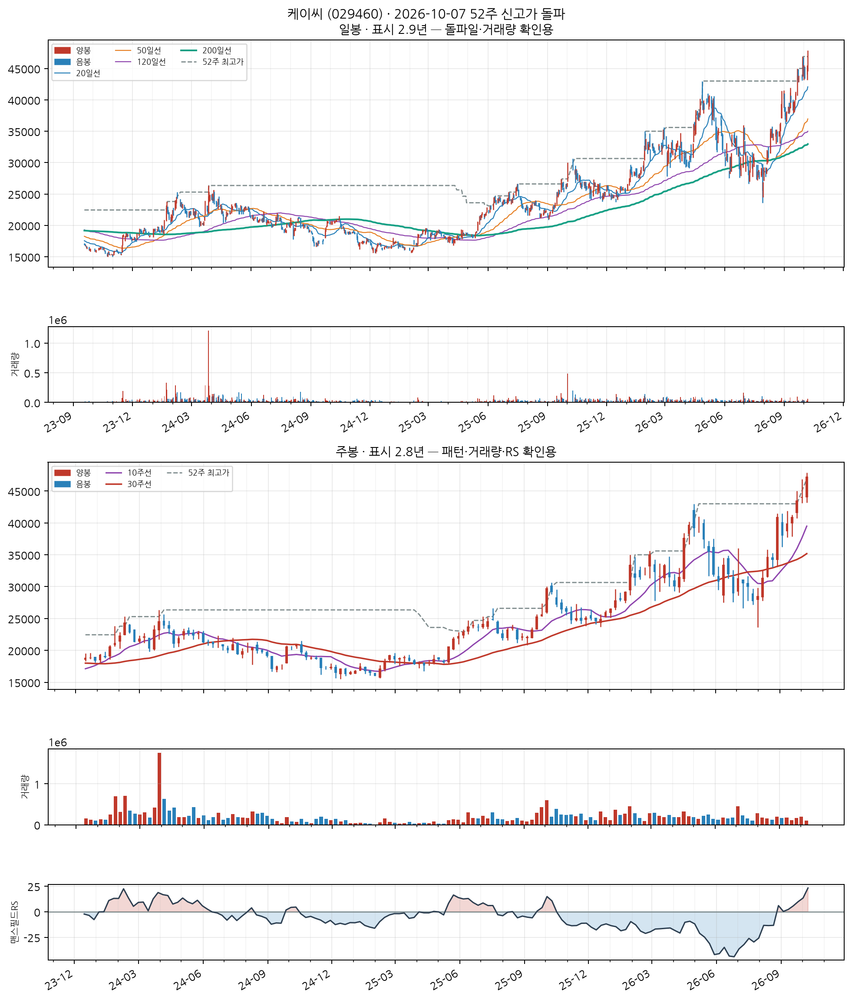
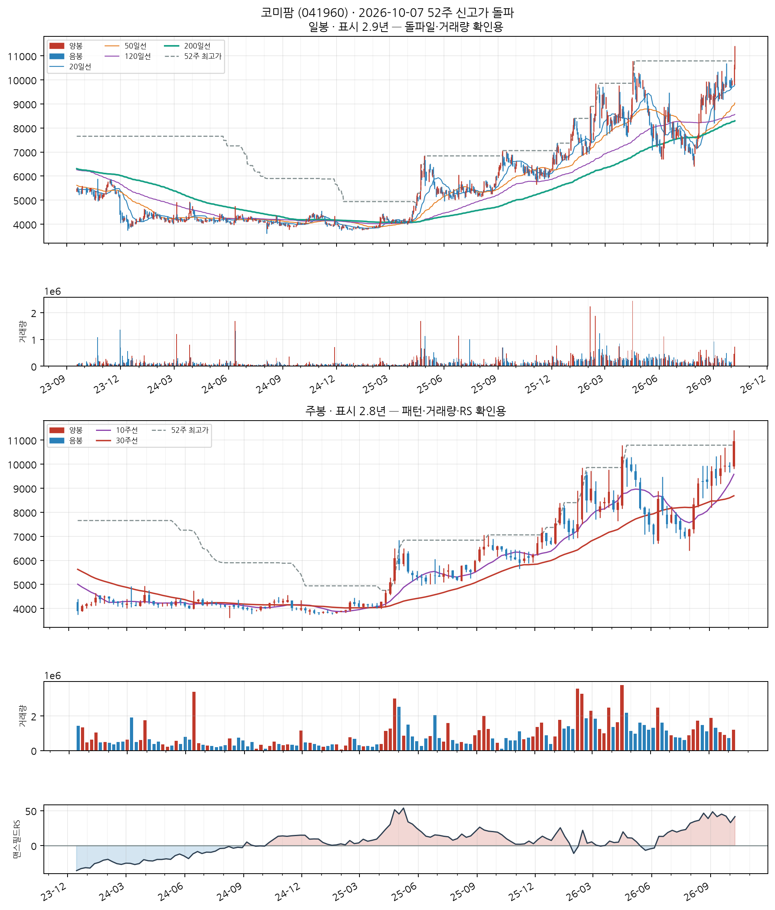
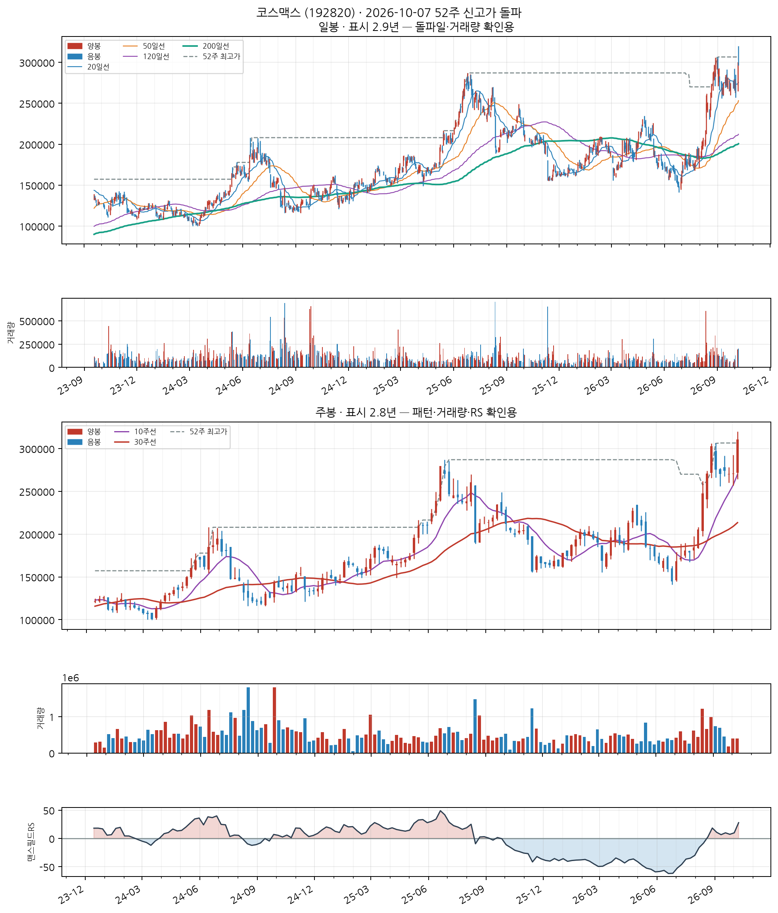
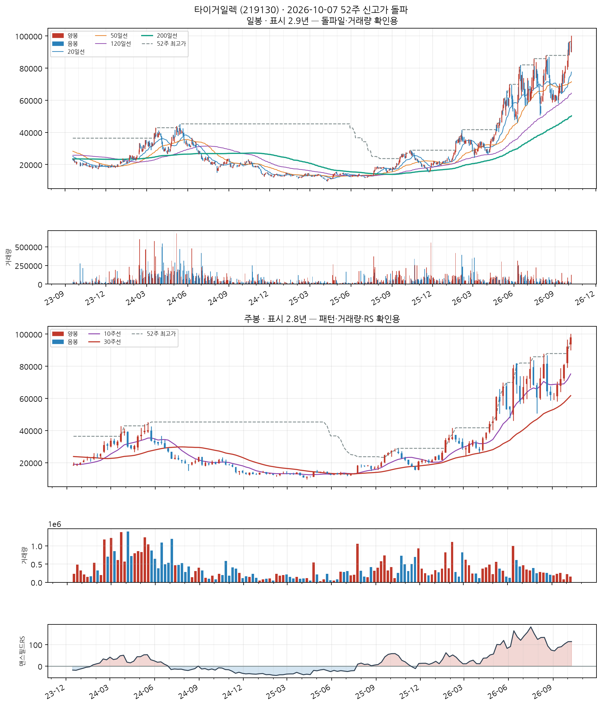

이 전략의 진입 조건
- 52주 신고가 근접·돌파 — 종가가 최근 252거래일(≈1년) 최고가의 '근접 허용폭' 이내일 것 (기본 설정은 하한 0% = 신고가 이상)
- 장기 추세 확인 — 종가가 200일 이동평균 위에 있고, 그 이동평균 자체도 상승 중일 것 (이미 꺾인 종목의 일시 반등을 걸러냅니다)
- 과열 하드컷 — 최근 5거래일 상승률이 40% 이상이면 제외 (급등 직후 고점을 잡는 것을 막습니다)
자세히 — 한계와 주의사항
George & Hwang(2004) <The 52-Week High and Momentum Investing>의 앵커링 이론에 근거합니다 — 투자자가 52주 최고가를 심리적 기준가로 삼아 그 근처에서 매수를 주저하는 편향이 풀리며 추가 상승이 이어진다는 것입니다.
의도적으로 '신선도'는 조건에 넣지 않았습니다. 이미 오래 상승 중인 리더주도 계속 포착하는 것이 이 스캐너의 목적입니다(신선도에 집중하는 쪽은 Launch Pad).
⚠️ 이 전략은 11년 검증에서 코스피를 이기지 못했습니다. CAGR 7.19% · MDD −85.6% (코스피 매수후보유 10.77% · −43.9%). reports/vs_kospi.md의 결론은 "쓸 수 있는 우위가 없다"입니다. 그럼에도 발행하는 것은 신호 자체를 참고 자료로 쓰기 위해서지, 성과가 검증돼서가 아닙니다.
예전 설명에 나오던 +261.22% 같은 수치는 당일 종가 매수를 가정한 값이라 실현 불가능합니다(종가는 장 마감에 확정됩니다). 지금 백테스트는 신호 다음 거래일 시가로 체결합니다.
한미사이언스 (008930)
44일전 포착
KOSPI
기타 금융업
업종 참고: RS 평균 55/99(업종 중 상위 32%) · 오늘 신호 4건 · 업종 평균이 코스피 대비 -25.1%p(126일), 종목별 편차 ±29%p
🧪 자체 섹터 분류(실험적, 참고용): 의약품 제조업 (한미사이언스·씨젠 등 15종목)
섹터 내 RS 순위: 1/15위 (RS 95/99)
섹터 1~3위: 한미사이언스(95), 씨젠(95), 한미약품(76)
※ 자체 상관관계 계산(최근 1년) — 검증 시 기준업종 11개 중 8개 정확. 주 단위로 구성종목이 일부 바뀔 수 있음(주간 일치도 실측 0.53)
종가 66,200 · 거래대금 465억
고점대비 +8.5%6개월 +74.2%갱신 2회거래량비 2.8x
손절 61,566 | 목표 80,102 | 수량 151주

📐 차트 패턴 판정: 후보 없음 후보 없음 판정 기준(PDF)
세 패턴 모두 필수 조건을 채운 후보가 없다(가장 가까운 컵위드핸들 후보: 기간: 컵 4주 — 기준 7~65주를 크게 벗어남).
가장 강한 반증 컵위드핸들: 기간: 컵 4주 — 기준 7~65주를 크게 벗어남; 역헤드앤숄더: 어깨 대칭: 어깨 높이차 25.4% — 과도(25% 초과); 이중바닥: 두 저점 일치: 저점 차이 28.5% — 같은 지지대로 보기 어려움(10% 초과)
경쟁 후보·더 단순한 설명 더 단순한 설명: 최근 26주 상승 추세 지속(+46.3%) — 베이스 없음
추가로 필요한 데이터 장중 고저 기준 깊이(여기 수치는 주봉 종가 기준) · 이번 주 완결 주봉(2026-10-09 라벨) — 미완결이라 판정에서 제외
패턴만으로 매수 추천이나 목표 달성 확률을 만들지 않습니다. 수치 기준은 잠정치이며 라벨 데이터로 검증되지 않았습니다.
CC — 분기 실적 성장 양호
2026 반기보고서(누적) · 순이익 흑자전환(+nan억원→+437억원) · EPS 흑자전환(+nan원→+644원) · 매출 흑자전환(+nan억원→+3,679억원)
DART 공시 기준 · 분기 단독 전년동기 대비 · 직전 분기보다 성장률이 낮아짐(감속) — 오닐 C 기준으로 한 단계 낮춤
AA — 연간 실적 성장 보통
2025 사업보고서(연간) · 순이익 +107.6% · EPS +99.1% · 매출 +5.7%
DART 공시 기준 · 연간 전년동기 대비 · 최근 3년 연속 증가는 아님 — 오닐 A 기준 미충족으로 한 단계 낮춤
NN — 신고가·모멘텀 우수
고점대비 +8.5% · 최근 20일 중 2회 갱신 · 6개월 모멘텀 +74.2%
SS — 수급(거래량) 우수
20일 평균 대비 2.79배
유통주식수·순매수 데이터는 미보유 (거래량으로만 근사)
LL — 주도주(상대강도) 우수
RS 등급 95/99 (126거래일 ≈ 6개월 기준 · 유니버스 1000종목 중 백분위) · 지수대비 +53.1%p
상위 시가총액 유니버스 기준 — KRX 전체 대비 백분위 아님 · 오닐의 RS Rating은 52주 기준이지만 여기는 126거래일로, 같은 리포트의 6개월 모멘텀과 기간을 맞춘 값이다(원전과 다름)
II — 기관·외국인 수급 우수
20일 순매수 +9.80% (거래대금 대비) · 최근절반 +11.87% vs 이전절반 +8.70% (개선) · 순매수 18일 · 누적 +289.4억원
**오닐의 I(기관 보유 종목 수의 증가)가 아니라 단기 순매수 흐름**을 쓴 대용값이다 — 보유 기관 수는 국내에 공개 데이터가 없다 · 한국투자증권 공식 API(KIS) 기준 · 기관+외국인 합산, 기타법인 제외로 거래대금은 소폭 과소추정 · 임계값은 아직 실측 검증 전 잠정치 — 수급 이력이 쌓이면 다른 지표와 같은 방식으로 구분력을 측정해 조정 예정
MM — 시장방향 판정불가
지수 데이터 조회 실패 또는 판정 불가
실제 매매에는 미적용 — 표시 전용
S-Oil우 (010955)
14일전 포착
KOSPI
정보없음
🧪 자체 섹터 분류(실험적, 참고용): 해상 운송업 (S-Oil우·S-Oil 등 12종목)
섹터 내 RS 순위: 1/12위 (RS 93/99)
섹터 1~3위: S-Oil우(93), S-Oil(91), SK이노베이션(89)
※ 자체 상관관계 계산(최근 1년) — 검증 시 기준업종 11개 중 8개 정확. 주 단위로 구성종목이 일부 바뀔 수 있음(주간 일치도 실측 0.53)
종가 89,900 · 거래대금 22억
고점대비 +0.4%6개월 +66.5%갱신 4회거래량비 0.8x
손절 83,607 | 목표 108,779 | 수량 111주

📐 차트 패턴 판정: 후보 없음 후보 없음 판정 기준(PDF)
세 패턴 모두 필수 조건을 채운 후보가 없다(가장 가까운 컵위드핸들 후보: 림 대칭: 좌우 림 차이 30.0% — 오른쪽 림이 높음, 20% 초과).
가장 강한 반증 컵위드핸들: 림 대칭: 좌우 림 차이 30.0% — 오른쪽 림이 높음, 20% 초과; 이중바닥: 최근성: 돌파가 12주 전(2026-07-10) — 기준 8주 이내, 이미 지난 베이스(확인선 대비 +42.8%)
경쟁 후보·더 단순한 설명 더 단순한 설명: 최근 26주 상승 추세 지속(+67.7%) — 베이스 없음
추가로 필요한 데이터 장중 고저 기준 깊이(여기 수치는 주봉 종가 기준) · 이번 주 완결 주봉(2026-10-09 라벨) — 미완결이라 판정에서 제외
패턴만으로 매수 추천이나 목표 달성 확률을 만들지 않습니다. 수치 기준은 잠정치이며 라벨 데이터로 검증되지 않았습니다.
CC — 분기 실적 성장 양호
2026 반기보고서(누적) · 순이익 흑자전환(+nan억원→+5,146억원) · EPS 흑자전환(+nan원→+4,420원) · 매출 흑자전환(+nan억원→+113,435억원)
DART 공시 기준 · 분기 단독 전년동기 대비 · 직전 분기보다 성장률이 낮아짐(감속) — 오닐 C 기준으로 한 단계 낮춤
AA — 연간 실적 성장 미흡
2025 사업보고서(연간) · 순이익 흑자전환(-1,930억원→+1,770억원) · EPS 흑자전환(-1,659원→+1,519원) · 매출 -6.5%
DART 공시 기준 · 연간 전년동기 대비 · 최근 3년 연속 증가는 아님 — 오닐 A 기준 미충족으로 한 단계 낮춤
NN — 신고가·모멘텀 우수
고점대비 +0.4% · 최근 20일 중 4회 갱신 · 6개월 모멘텀 +66.5%
SS — 수급(거래량) 미흡
20일 평균 대비 0.78배
유통주식수·순매수 데이터는 미보유 (거래량으로만 근사)
LL — 주도주(상대강도) 우수
RS 등급 93/99 (126거래일 ≈ 6개월 기준 · 유니버스 1000종목 중 백분위) · 지수대비 +36.8%p
상위 시가총액 유니버스 기준 — KRX 전체 대비 백분위 아님 · 오닐의 RS Rating은 52주 기준이지만 여기는 126거래일로, 같은 리포트의 6개월 모멘텀과 기간을 맞춘 값이다(원전과 다름)
II — 기관·외국인 수급 우수
20일 순매수 +24.33% (거래대금 대비) · 최근절반 +28.11% vs 이전절반 +19.37% (개선) · 순매수 15일 · 누적 +109.9억원
**오닐의 I(기관 보유 종목 수의 증가)가 아니라 단기 순매수 흐름**을 쓴 대용값이다 — 보유 기관 수는 국내에 공개 데이터가 없다 · 한국투자증권 공식 API(KIS) 기준 · 기관+외국인 합산, 기타법인 제외로 거래대금은 소폭 과소추정 · 임계값은 아직 실측 검증 전 잠정치 — 수급 이력이 쌓이면 다른 지표와 같은 방식으로 구분력을 측정해 조정 예정
MM — 시장방향 판정불가
지수 데이터 조회 실패 또는 판정 불가
실제 매매에는 미적용 — 표시 전용
케이씨 (029460)
8일전 포착
KOSPI
측정, 시험, 항해, 제어 및 기타 정밀기기 제조업; 광학기기 제외
업종 참고: RS 평균 58/99(업종 중 상위 26%) · 오늘 신호 2건 · 업종 평균이 코스닥 대비 +35.9%p(126일), 종목별 편차 ±66%p
🧪 자체 섹터 분류(실험적, 참고용): 특수 목적용 기계 제조업 (케이씨텍·GST 등 6종목)
섹터 내 RS 순위: 3/6위 (RS 92/99)
섹터 1~3위: 케이씨텍(97), GST(93), 케이씨(92)
※ 자체 상관관계 계산(최근 1년) — 검증 시 기준업종 11개 중 8개 정확. 주 단위로 구성종목이 일부 바뀔 수 있음(주간 일치도 실측 0.53)
종가 47,300 · 거래대금 30억
고점대비 +0.9%6개월 +49.7%갱신 3회거래량비 1.8x
손절 43,989 | 목표 57,233 | 수량 211주

📐 차트 패턴: 약한 유사 — 이중바닥 돌파 확인 확신 낮음 판정 기준(PDF)
두 저점(30,000/27,700) 뒤 중간 고점 39,700를 종가로 넘었다.
가장 강한 반증 선행 추세: 선행 추세가 상승(+57.9%) — 상승 중 눌림일 수 있어 반전형 전제가 없다
경쟁 후보·더 단순한 설명 더 단순한 설명: 선행 하락이 없어 반전형이 아니라 상승 추세 중 눌림(조정)일 수 있다
측정표 (주봉 종가 기준, 판정일 2026-10-07 이후 데이터 미사용)
조건별 판정
- 미충족 선행 추세 — 선행 추세가 상승(+57.9%) — 상승 중 눌림일 수 있어 반전형 전제가 없다
- 부분충족 두 저점 일치 — 저점 차이 7.7% — 6% 초과
- 부분충족 중간 반등 — 중간 반등 43.3% — 30%를 넘어 W가 아니라 독립된 두 파동일 수 있음
- 충족 기간 — 베이스 31주 ≥ 7주
- 충족 깊이 — 베이스 깊이 21.0% ≤ 40%
- 충족 저점2 매도 약화 — 저점2 부근 거래량 = 저점1 부근의 0.89배
- 충족 최근성 — 돌파 주(2026-08-28)가 5주 전
- 충족 넥라인 돌파 — 2026-08-28 주 종가 40,950 > 확인선 — 돌파 후 5주 경과
- 미충족 돌파 거래량 — 돌파 주 거래량 = 직전 10주 평균의 0.99배 (기준 1.4배)
추가로 필요한 데이터 장중 고저 기준 깊이(여기 수치는 주봉 종가 기준) · 이번 주 완결 주봉(2026-10-09 라벨) — 미완결이라 판정에서 제외
패턴만으로 매수 추천이나 목표 달성 확률을 만들지 않습니다. 수치 기준은 잠정치이며 라벨 데이터로 검증되지 않았습니다.
CC — 분기 실적 성장 우수
2026 반기보고서(누적) · 순이익 흑자전환(+nan억원→+255억원) · EPS 흑자전환(+nan원→+2,053원)
DART 공시 기준 · 분기 단독 전년동기 대비 · 직전 분기보다 성장률이 높아짐(가속)
AA — 연간 실적 성장 미흡
2025 사업보고서(연간) · 순이익 -2.0% · EPS +1.2%
DART 공시 기준 · 연간 전년동기 대비 · 최근 3년 연속 증가는 아님 — 오닐 A 기준 미충족으로 한 단계 낮춤
NN — 신고가·모멘텀 우수
고점대비 +0.9% · 최근 20일 중 3회 갱신 · 6개월 모멘텀 +49.7%
SS — 수급(거래량) 우수
20일 평균 대비 1.82배
유통주식수·순매수 데이터는 미보유 (거래량으로만 근사)
LL — 주도주(상대강도) 우수
RS 등급 92/99 (126거래일 ≈ 6개월 기준 · 유니버스 1000종목 중 백분위) · 지수대비 +24.0%p
상위 시가총액 유니버스 기준 — KRX 전체 대비 백분위 아님 · 오닐의 RS Rating은 52주 기준이지만 여기는 126거래일로, 같은 리포트의 6개월 모멘텀과 기간을 맞춘 값이다(원전과 다름)
II — 기관·외국인 수급 우수
20일 순매수 +16.32% (거래대금 대비) · 최근절반 +18.36% vs 이전절반 +12.67% (개선) · 순매수 15일 · 누적 +51.9억원
**오닐의 I(기관 보유 종목 수의 증가)가 아니라 단기 순매수 흐름**을 쓴 대용값이다 — 보유 기관 수는 국내에 공개 데이터가 없다 · 한국투자증권 공식 API(KIS) 기준 · 기관+외국인 합산, 기타법인 제외로 거래대금은 소폭 과소추정 · 임계값은 아직 실측 검증 전 잠정치 — 수급 이력이 쌓이면 다른 지표와 같은 방식으로 구분력을 측정해 조정 예정
MM — 시장방향 판정불가
지수 데이터 조회 실패 또는 판정 불가
실제 매매에는 미적용 — 표시 전용
의약품 제조업
업종 참고: RS 평균 40/99(업종 중 상위 74%) · 오늘 신호 4건 · 업종 평균이 코스피 대비 -39.9%p(126일), 종목별 편차 ±18%p
🧪 자체 섹터 분류(실험적, 참고용): 코미팜·아바코 등 12종목 (업종 혼재)
섹터 내 RS 순위: 1/12위 (RS 89/99)
섹터 1~3위: 코미팜(89), 아바코(61), 와이지-원(56)
※ 자체 상관관계 계산(최근 1년) — 검증 시 기준업종 11개 중 8개 정확. 주 단위로 구성종목이 일부 바뀔 수 있음(주간 일치도 실측 0.53)
종가 10,960 · 거래대금 80억
고점대비 +1.6%6개월 +28.8%갱신 1회거래량비 3.0x
손절 10,193 | 목표 13,262 | 수량 912주

📐 차트 패턴: 약한 유사 — 이중바닥 돌파 확인 확신 낮음 판정 기준(PDF)
두 저점(7,080/7,000) 뒤 중간 고점 8,560를 종가로 넘었다.
가장 강한 반증 선행 추세: 선행 추세가 상승(+67.1%) — 상승 중 눌림일 수 있어 반전형 전제가 없다
경쟁 후보·더 단순한 설명 더 단순한 설명: 선행 하락이 없어 반전형이 아니라 상승 추세 중 눌림(조정)일 수 있다
측정표 (주봉 종가 기준, 판정일 2026-10-07 이후 데이터 미사용)
조건별 판정
- 미충족 선행 추세 — 선행 추세가 상승(+67.1%) — 상승 중 눌림일 수 있어 반전형 전제가 없다
- 충족 두 저점 일치 — 저점 차이 1.1% ≤ 6% · 두 번째 저점이 첫 저점을 언더컷(IBD 선호)
- 충족 중간 반등 — 중간 반등 22.3% ≥ 8%
- 충족 기간 — 베이스 24주 ≥ 7주
- 충족 깊이 — 베이스 깊이 32.1% ≤ 40%
- 충족 저점2 매도 약화 — 저점2 부근 거래량 = 저점1 부근의 0.44배
- 충족 최근성 — 돌파 주(2026-08-14)가 7주 전
- 충족 넥라인 돌파 — 2026-08-14 주 종가 9,200 > 확인선 — 돌파 후 7주 경과
- 충족 돌파 거래량 — 돌파 주 거래량 = 직전 10주 평균의 1.49배
추가로 필요한 데이터 장중 고저 기준 깊이(여기 수치는 주봉 종가 기준) · 이번 주 완결 주봉(2026-10-09 라벨) — 미완결이라 판정에서 제외
패턴만으로 매수 추천이나 목표 달성 확률을 만들지 않습니다. 수치 기준은 잠정치이며 라벨 데이터로 검증되지 않았습니다.
CC — 분기 실적 성장 양호
2026 반기보고서(누적) · 순이익 흑자전환(+nan억원→+5.2억원) · EPS 흑자전환(+nan원→+9.0원)
DART 공시 기준 · 분기 단독 전년동기 대비 · 직전 분기보다 성장률이 낮아짐(감속) — 오닐 C 기준으로 한 단계 낮춤
AA — 연간 실적 성장 미흡
2025 사업보고서(연간) · 순이익 적자전환(+147억원→-80억원) · EPS 적자전환(+188원→-102원) · 매출 -10.7%
DART 공시 기준 · 연간 전년동기 대비 · 최근 3년 연속 증가는 아님 — 오닐 A 기준 미충족으로 한 단계 낮춤
NN — 신고가·모멘텀 우수
고점대비 +1.6% · 최근 20일 중 1회 갱신 · 6개월 모멘텀 +28.8%
SS — 수급(거래량) 우수
20일 평균 대비 2.98배
유통주식수·순매수 데이터는 미보유 (거래량으로만 근사)
LL — 주도주(상대강도) 우수
RS 등급 89/99 (126거래일 ≈ 6개월 기준 · 유니버스 1000종목 중 백분위) · 지수대비 +49.9%p
상위 시가총액 유니버스 기준 — KRX 전체 대비 백분위 아님 · 오닐의 RS Rating은 52주 기준이지만 여기는 126거래일로, 같은 리포트의 6개월 모멘텀과 기간을 맞춘 값이다(원전과 다름)
II — 기관·외국인 수급 우수
20일 순매수 +3.79% (거래대금 대비) · 최근절반 +10.73% vs 이전절반 -4.87% (개선) · 순매수 10일 · 누적 +19.8억원
**오닐의 I(기관 보유 종목 수의 증가)가 아니라 단기 순매수 흐름**을 쓴 대용값이다 — 보유 기관 수는 국내에 공개 데이터가 없다 · 한국투자증권 공식 API(KIS) 기준 · 기관+외국인 합산, 기타법인 제외로 거래대금은 소폭 과소추정 · 임계값은 아직 실측 검증 전 잠정치 — 수급 이력이 쌓이면 다른 지표와 같은 방식으로 구분력을 측정해 조정 예정
MM — 시장방향 판정불가
지수 데이터 조회 실패 또는 판정 불가
실제 매매에는 미적용 — 표시 전용
코스맥스 (192820)
40일전 포착
KOSPI
기타 화학제품 제조업
업종 참고: RS 평균 62/99(업종 중 상위 10%) · 오늘 신호 2건 · 업종 평균이 코스피 대비 -18.7%p(126일), 종목별 편차 ±27%p
🧪 자체 섹터 분류(실험적, 참고용): 기타 화학제품 제조업 (한국콜마·한국화장품제조 등 25종목)
섹터 내 RS 순위: 3/25위 (RS 93/99)
섹터 1~3위: 한국콜마(96), 한국화장품제조(95), 코스맥스(93)
※ 자체 상관관계 계산(최근 1년) — 검증 시 기준업종 11개 중 8개 정확. 주 단위로 구성종목이 일부 바뀔 수 있음(주간 일치도 실측 0.53)
종가 310,500 · 거래대금 631억
고점대비 +1.3%6개월 +55.2%갱신 1회거래량비 2.0x
손절 288,765 | 목표 375,705 | 수량 32주

📐 차트 패턴 판정: 후보 없음 후보 없음 판정 기준(PDF)
세 패턴 모두 필수 조건을 채운 후보가 없다(가장 가까운 컵위드핸들 후보: 핸들: 핸들 저점 159,200가 컵 중간값 197,950 아래 — 핸들이 아니라 컵 재하락).
가장 강한 반증 컵위드핸들: 핸들: 핸들 저점 159,200가 컵 중간값 197,950 아래 — 핸들이 아니라 컵 재하락; 이중바닥: 두 저점 일치: 저점 차이 14.2% — 같은 지지대로 보기 어려움(10% 초과)
경쟁 후보·더 단순한 설명 더 단순한 설명: 최근 26주 상승 추세 지속(+43.2%) — 베이스 없음
추가로 필요한 데이터 장중 고저 기준 깊이(여기 수치는 주봉 종가 기준) · 이번 주 완결 주봉(2026-10-09 라벨) — 미완결이라 판정에서 제외
패턴만으로 매수 추천이나 목표 달성 확률을 만들지 않습니다. 수치 기준은 잠정치이며 라벨 데이터로 검증되지 않았습니다.
CC — 분기 실적 성장 우수
2026 반기보고서(누적) · 순이익 흑자전환(+nan억원→+500억원) · EPS 흑자전환(+nan원→+4,292원) · 매출 흑자전환(+nan억원→+7,949억원)
DART 공시 기준 · 분기 단독 전년동기 대비 · 직전 분기보다 성장률이 높아짐(가속)
AA — 연간 실적 성장 양호
2025 사업보고서(연간) · 순이익 +48.2% · EPS +43.4% · 매출 +10.7%
DART 공시 기준 · 연간 전년동기 대비 · 최근 3년 연간 EPS 연속 증가
NN — 신고가·모멘텀 우수
고점대비 +1.3% · 최근 20일 중 1회 갱신 · 6개월 모멘텀 +55.2%
SS — 수급(거래량) 우수
20일 평균 대비 1.98배
유통주식수·순매수 데이터는 미보유 (거래량으로만 근사)
LL — 주도주(상대강도) 우수
RS 등급 93/99 (126거래일 ≈ 6개월 기준 · 유니버스 1000종목 중 백분위) · 지수대비 +36.5%p
상위 시가총액 유니버스 기준 — KRX 전체 대비 백분위 아님 · 오닐의 RS Rating은 52주 기준이지만 여기는 126거래일로, 같은 리포트의 6개월 모멘텀과 기간을 맞춘 값이다(원전과 다름)
II — 기관·외국인 수급 양호
20일 순매수 +1.93% (거래대금 대비) · 최근절반 +4.37% vs 이전절반 -0.24% (개선) · 순매수 14일 · 누적 +113.1억원
**오닐의 I(기관 보유 종목 수의 증가)가 아니라 단기 순매수 흐름**을 쓴 대용값이다 — 보유 기관 수는 국내에 공개 데이터가 없다 · 한국투자증권 공식 API(KIS) 기준 · 기관+외국인 합산, 기타법인 제외로 거래대금은 소폭 과소추정 · 임계값은 아직 실측 검증 전 잠정치 — 수급 이력이 쌓이면 다른 지표와 같은 방식으로 구분력을 측정해 조정 예정
MM — 시장방향 판정불가
지수 데이터 조회 실패 또는 판정 불가
실제 매매에는 미적용 — 표시 전용
타이거일렉 (219130)
8일전 포착
KOSDAQ
전자부품 제조업
업종 참고: RS 평균 61/99(업종 중 상위 13%) · 오늘 신호 6건 · 업종 평균이 코스닥 대비 +30.0%p(126일), 종목별 편차 ±55%p
🧪 자체 섹터 분류(실험적, 참고용): 피델릭스·주성엔지니어링 등 25종목 (업종 혼재)
섹터 내 RS 순위: 3/25위 (RS 99/99)
섹터 1~3위: 피델릭스(99), 주성엔지니어링(99), 타이거일렉(99)
※ 자체 상관관계 계산(최근 1년) — 검증 시 기준업종 11개 중 8개 정확. 주 단위로 구성종목이 일부 바뀔 수 있음(주간 일치도 실측 0.53)
종가 98,000 · 거래대금 123억
고점대비 +1.4%6개월 +234.5%갱신 3회거래량비 2.9x
손절 91,140 | 목표 118,580 | 수량 102주

📐 차트 패턴: 약한 유사 — 이중바닥 돌파 확인 확신 낮음 판정 기준(PDF)
두 저점(60,600/60,400) 뒤 중간 고점 81,300를 종가로 넘었다.
가장 강한 반증 선행 추세: 선행 추세가 상승(+263.5%) — 상승 중 눌림일 수 있어 반전형 전제가 없다
경쟁 후보·더 단순한 설명 더 단순한 설명: 선행 하락이 없어 반전형이 아니라 상승 추세 중 눌림(조정)일 수 있다
측정표 (주봉 종가 기준, 판정일 2026-10-07 이후 데이터 미사용)
조건별 판정
- 미충족 선행 추세 — 선행 추세가 상승(+263.5%) — 상승 중 눌림일 수 있어 반전형 전제가 없다
- 충족 두 저점 일치 — 저점 차이 0.3% ≤ 6% · 두 번째 저점이 첫 저점을 언더컷(IBD 선호)
- 부분충족 중간 반등 — 중간 반등 34.6% — 30%를 넘어 W가 아니라 독립된 두 파동일 수 있음
- 충족 기간 — 베이스 16주 ≥ 7주
- 충족 깊이 — 베이스 깊이 23.3% ≤ 40%
- 충족 저점2 매도 약화 — 저점2 부근 거래량 = 저점1 부근의 0.68배
- 충족 최근성 — 돌파 주(2026-10-02)가 0주 전
- 충족 넥라인 돌파 — 2026-10-02 주 종가 92,300 > 확인선
- 미충족 돌파 거래량 — 돌파 주 거래량 = 직전 10주 평균의 0.92배 (기준 1.4배)
추가로 필요한 데이터 장중 고저 기준 깊이(여기 수치는 주봉 종가 기준) · 이번 주 완결 주봉(2026-10-09 라벨) — 미완결이라 판정에서 제외
패턴만으로 매수 추천이나 목표 달성 확률을 만들지 않습니다. 수치 기준은 잠정치이며 라벨 데이터로 검증되지 않았습니다.
CC — 분기 실적 성장 우수
2026 반기보고서(누적) · 순이익 흑자전환(+nan억원→+46억원) · EPS 흑자전환(+nan원→+735원) · 매출 흑자전환(+nan억원→+335억원)
DART 공시 기준 · 분기 단독 전년동기 대비 · 직전 분기보다 성장률이 높아짐(가속)
AA — 연간 실적 성장 우수
2025 사업보고서(연간) · 순이익 +1,817% (+2.7억원→+53억원) · EPS +1,798% (+44원→+835원) · 매출 +30.5%
DART 공시 기준 · 연간 전년동기 대비 · 최근 3년 연간 EPS 연속 증가
NN — 신고가·모멘텀 우수
고점대비 +1.4% · 최근 20일 중 3회 갱신 · 6개월 모멘텀 +234.5%
SS — 수급(거래량) 우수
20일 평균 대비 2.93배
유통주식수·순매수 데이터는 미보유 (거래량으로만 근사)
LL — 주도주(상대강도) 우수
RS 등급 99/99 (126거래일 ≈ 6개월 기준 · 유니버스 1000종목 중 백분위) · 지수대비 +183.0%p
상위 시가총액 유니버스 기준 — KRX 전체 대비 백분위 아님 · 오닐의 RS Rating은 52주 기준이지만 여기는 126거래일로, 같은 리포트의 6개월 모멘텀과 기간을 맞춘 값이다(원전과 다름)
II — 기관·외국인 수급 우수
20일 순매수 +11.53% (거래대금 대비) · 최근절반 +33.26% vs 이전절반 -15.24% (개선) · 순매수 11일 · 누적 +85.3억원
**오닐의 I(기관 보유 종목 수의 증가)가 아니라 단기 순매수 흐름**을 쓴 대용값이다 — 보유 기관 수는 국내에 공개 데이터가 없다 · 한국투자증권 공식 API(KIS) 기준 · 기관+외국인 합산, 기타법인 제외로 거래대금은 소폭 과소추정 · 임계값은 아직 실측 검증 전 잠정치 — 수급 이력이 쌓이면 다른 지표와 같은 방식으로 구분력을 측정해 조정 예정
MM — 시장방향 판정불가
지수 데이터 조회 실패 또는 판정 불가
실제 매매에는 미적용 — 표시 전용